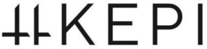

Trade Mark Journal No.2026/010 6 March 2026
WO0000001892549 (20,35)
Office of origin: Turkey
Date of International Registration:2 July 2025
Date of designation in the UK:
2 July 2025

International priority date claimed: 28 February 2025
(Turkey)
- Class 20
- Bed mattresses, pillows, mattresses and pillows for non-medical purposes, beach mattresses; bee hives, artificial honeycombs and honeycomb slats; display boards made of wood or synthetic material, picture frames for paintings, identity cards, tags, name tags, labels; non-metallic baskets, fishing baskets; portable ladders, mobile ladders made of wood or synthetic material; non-metallic chocks for vehicle wheels; furniture, clothes hangers, regardless of the substances and materials they are made of; mirrors [looking glasses]; portable infant beds, playpens with rails (for indoor use), baby cribs, baby walkers; packaging containers of wood or plastic, barrels, casks, tanks, boxes, crates, shipping containers, and transport pallets, all made of wood or plastic, and non-metal lids used with them for transportation and storage purposes; ornamental and decorative articles made of wood, cork, reed, bamboo, wicker, oyster shell, amber, mother-of-pearl, meerschaum, wax, plastic or plaster included in this class; figurines, statues and competition cups made of wood, cork, reed, bamboo, wicker, oyster shell, amber, mother-of-pearl, meerschaum, wax, plastic or plaster included in this class; kennels, nests, beds for pets; bamboo curtains, roller blinds (indoor), beaded curtains for decoration purposes; curtain hooks, curtain rings, curtain rods.
- Class 35
- The bringing together, for the benefit of others, of a variety of goods, namely, jewellery items (including imitations) for customers to view and purchase goods conveniently, precious metals, jewellery, precious stones and jewelry made from them, cufflinks, tie pins, statues and trinkets made of precious metal, key chains made of all kinds of materials, clocks and time-measuring instruments (including chronometers and their parts, watch straps), precious metal trophies given in competitions, rosaries, processed or unprocessed leathers and hides, artificial leathers, stout leathers, lining leathers, goods made of leather, leather imitations or other materials, namely, bags, wallets, leather or stout leather boxes and trunks, key cases, suitcases, umbrellas, parasols, sunshades, walking sticks, whips, harnesses, saddles and parts thereof, collars for pets, clothing for pets, furniture, clothes hangers, regardless of the substances and materials they are made of, bed mattresses, pillows, mattresses and pillows for non-medical purposes, beach mattresses, bee hives, artificial honeycombs and honeycomb slats, boards made of wood or synthetic material, pictures, frames for paintings, identity cards, tags, name tags, labels, non-metallic baskets, fishing baskets, portable ladders, mobile ladders made of wood or synthetic material, furniture, clothes hangers, regardless of the substances and materials they are made of, mirrors [looking glasses], infant carriers, playpens with rails (for indoor use), baby cribs, baby walkers, packaging made of wood or synthetic material, barrels, casks, canisters, tanks, boxes, packaging containers, shipping containers, crates, transport pallets and lids used with them for transportation and storage purposes, ornamental and decorative articles made of wood, cork, reed, bamboo, wicker, oyster shell, amber, mother-of-pearl, meerschaum, wax, plastic or plaster, figurines, wall hangings, statues and competition cups made of the materials listed above, kennels, nests, beds for pets, bamboo curtains, roller blinds (indoor), strip curtains, beaded curtains for decoration purposes, curtain hooks, curtain rings, curtain rods, non-metallic chocks for vehicle wheels, non-electric cleaning tools and equipment, brushes other than paintbrushes, steel shavings, sponges, steel wool, rags, textile cleaning and wiping cloths, dishwashing gloves, non-electric polishing machines, carpet sweepers, stick mops, toothbrushes, electric toothbrushes, dental floss, shaving brushes, hairbrushes, makeup brushes, combs, household and kitchen utensils, including those made of precious metals, and not operated by electricity (excluding forks, knives, spoons), food serving sets, pots and pans, bottle openers, pots, straws, non-electric cooking utensils, non-electric and non-gas grills and skewers to use with them, demijohn water pumps (including battery-powered and rechargeable), ironing boards and covers, clothes dryers, cages, aquariums, vivariums, terrariums for pets, ornaments and decorations made of glass, porcelain, ceramics, clay, statues, figurines, vases and competition cups made of these materials, mouse traps, insect traps, electric devices to repel or destroy flies and insects, fly catchers, fly rackets, perfume burners (burners that emit odor when lit), perfume sprays and vaporizers (sprayers), electric and non-electric make-up removers, powder puffs, boxes for toiletries, spray hose nozzles, nozzles for irrigation strainers, irrigation tools, garden irrigation strainers, tap-attached nozzles, unprocessed glass, semiprocessed glass, glass mosaics and glass powders for decoration (except for construction), glass wool (not for insulation and textile purposes), woven or non-woven fabrics, home textile products, curtains, bedspreads, duvet covers, sheets, pillow cases, blankets, quilts, towels, flags, pennants, labels from textiles, swaddling blankets for babies, sleeping bags for campers, carpets, rugs, runners, prayer mats, linoleum, artificial grass, cork linoleum for flooring, mats for sports purposes, wallpapers, enabling customers to conveniently view and purchase those goods, such services may be provided by retail stores, wholesale outlets, by means of electronic media or through mail order catalogues.
KEPİ DEKORASYON VE MOBİLYA SANAYİ TİCARET ANONİM ŞİRKETİ
Representative: ScalaxlP, 7 Bell Yard London WC2A 2JR UNITED KINGDOM